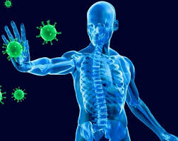

El sistema inmune o inmunológico es el encargado de la defensa del organismo, identificando, persiguiendo y eliminando los cuerpos y sustancias extrañas que puedan penetrarlo. Para ello dispone de una serie de órganos productores de glóbulos blancos (ganglios linfáticos, el bazo, el timo y la médula ósea) de distinto tipo: células especializadas en descubrir, atenuar y expulsar a los agentes potencialmente dañinos, como bacterias, virus, etc.
Estos glóbulos blancos o linfocitos se desplazan por el cuerpo humano a través del tegumento y del aparato linfático, así como de la sangre y otros fluidos. Cuando encuentran señal de infección o intoxicación disparan las alertas del organismo y hacen lo posible por aislar y expulsar al intruso, ya sea mediante el sistema excretor o el digestivo, o incluso mediante secreciones como la pus o los mocos, que brotan de mucosas o de regiones infectadas, según sea el caso.
